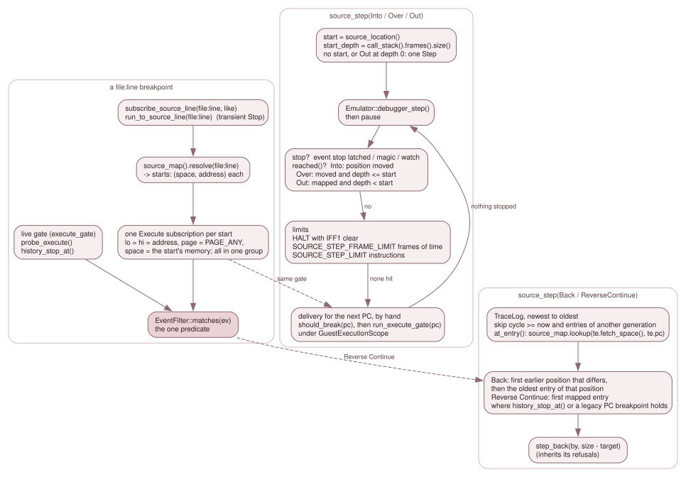

7.5 Breakpoints, steps, history and call frames¶
Everything on this page answers "where in the source" with machinery that
already existed for "where in memory": the Execute event, the debugger's Step,
the trace, and the call-stack tracker. None of it adds a new way to stop the
machine. It adds a way to name where, and a loop that ends on a source boundary.
3.9.4 owns the step
modes, the gates and rewind; this page does not restate them.

Left: a file:line breakpoint is a group of Execute subscriptions that share
one predicate. Middle: a forward source step is a loop of the debugger's own Step.
Right: Back and Reverse Continue pick a trace entry and hand a count to
step_back().
A line breakpoint is a group of Execute subscriptions¶
Debugger::subscribe_source_line(by, "file:line", like) (debugger_events.cpp):
likemust be anExecutesubscription, or the verb is refused; so is a departed client.source_map().resolve(file_line)(7.2) gives the line's starts. No start refuses the verb (RefusedUnavailable).- A new
GroupIdis taken, and for each start(space, address)a copy oflikeis added withfilter.lo = filter.hi = address,filter.page = PAGE_ANYandfilter.space = space, all in that group.
The qualifier is the canonical one (7.1): the memory the
location was compiled for. A line compiled into two places is two subscriptions in
one group, each matching only its own memory. The group verbs
(unsubscribe_group(), set_group_enabled()) act on all members, and refuse a
group the caller does not own with the same answer an unknown one gets. The Qt
Breakpoints panel shows a group as one row (Row::group in breakpoint_model.h).
Debugger::run_to_source_line(by, "file:line") (debugger_control.cpp) is Run To
for a line: it checks the execute gate and resolves the line before it pauses
anything, so a refusal leaves a running machine running; then it builds a
transient Stop Execute and calls subscribe_source_line() with it,
run_to_subscribed() and arm_target(RunTo, by, starts.front().address, ...),
remembering every start in armed_targets. A transient subscription is removed
at the next stop that the backend caused (Impl::apply_stop()).
One predicate¶
All of this relies on a single decision about whether an Execute event matches
a filter, EventFilter::matches(ev) (event_table.cpp: kind, range, legacy
page, then space). It has three callers, and they differ only in where the
Event comes from:
| Caller | The Event |
Used for |
|---|---|---|
EventTable::filter_matches(), from Impl::deliver_to_subscribers() |
built by Impl::execute_gate(pc): phys_page is the effective page, space is predict_fetch(pc) |
the live gate, before an instruction runs, and a source step's delivery below |
Debugger::probe_execute(pc) |
the same event, built without recording a hit | the pure "what is armed here" query |
history_stop_at() (debugger_source.cpp) |
built from a TraceEntry: pc, phys_page = te.mmu[te.pc >> 13], space = te.fetch_space() |
Reverse Continue |
The first two use the prediction, the third the record (7.1).
history_stop_at() honours only what does not depend on the machine of then: a
live (Entry::live: enabled, and on for its client), non-transient, unconditional Stop with no handler, which has not
already fired its once. A breakpoint with a condition or a handler cannot be
re-evaluated against a machine that is not there.
source_step()¶
Debugger::source_step(by, kind) (debugger_source.cpp), with SourceStep =
Into, Over, Out, Back, ReverseContinue. It is refused inside a
delivery, and with RefusedUnavailable when there is no live source map
(recheck() runs first, 7.6).
The forward steps¶
Into, Over and Out are a loop over Emulator::debugger_step(), the
debugger's own single Step, so a source step is exactly a run of Steps that stops
on a source boundary. First execute_gate() (the same refusals a Step has), then
the pause ownership and stop evidence exactly as step_into() sets them.
- The start.
startis a copy ofsource_location()(a handler may load a map mid-step and invalidate the pointer), andstart_depthiscall_stack().frames().size(). With no location under the PC, orOutwith no tracked frame, the step is one instruction: that is how an unmapped stretch is left. - The boundary.
reached()re-reads the location and the depth after each Step:
| Kind | Reached when |
|---|---|
Into |
the position moved (same_position() is false: file, line or column) |
Over |
the position moved and depth <= start_depth |
Out |
there is a location and depth < start_depth |
Over and Out measure depth with the call-stack tracker, so they need it on
(set_call_stack_enabled, a per-client request; with a C variable store and a non-observer client
attached it is on by itself, 7.10).
- The loop, per iteration: debugger_step(), then pause(); stop if an event
stop is latched, or the magic or watch stop fired; stop if reached(); stop at a
HALT with interrupts disabled (Warn: "Source step stopped at a HALT with
interrupts disabled"), because each Step there would spend two frames learning
that only an NMI or a reset ends it; stop when the machine clock has advanced by
SOURCE_STEP_FRAME_LIMIT frames (100, SOURCE_STEP_FRAME_LIMIT, debugger.h:1464) since the start
(Warn); then the delivery below.
- The limit. After SOURCE_STEP_LIMIT instructions (1,000,000,
SOURCE_STEP_LIMIT, debugger.h:1460) the step ends with a Warn.
- The delivery. debugger_step() delivers no Execute event, because run_frame()
does that before each instruction and a Step does not run through it. So between
instructions the loop gives the next PC run_frame()'s treatment itself, in its
order: DebugState::should_break(pc) (the legacy PC breakpoint), then, when
execute_events_armed(), run_execute_gate(pc) under a
GuestExecutionScope. Handlers run, and a Stop records its hit and its
once. If a handler moved the PC, the new address gets no delivery of its own
(as in a run, the redirect target simply runs next) but the loop checks whether it
is already the boundary.
A step ends the way a Step does: finish() pauses, and an event's own stop becomes
the reason in place of Step.
Back and Reverse Continue¶
These search the retained trace; they do not run the machine. They need the trace
on (else the rewind refusal "the instruction trace is off") and they hand the result
to step_back(by, n), so they inherit its refusals. Candidates are the entries
before the machine's current cycle (a Frame Back or a slider jump leaves newer
entries in the trace) and in the machine's current load generation
(generation_of_seq(), 7.6): Back never crosses a landing into
the history of the machine before it.
For each entry, newest first, at_entry() asks the map with the entry's recorded
identity, source_map.lookup(te.fetch_space(), te.pc); an entry whose fetch space
is cpu() ("none recorded") has no location. An entry with no location is skipped
by both kinds.
Backtakes the newest earlier entry whose position differs from the current one (same_position(); a loop on one line, or several records for one statement, count as one step), then walks older entries (passing unmapped ones) while they are at that same position, and lands on the oldest: the first instruction of the previous statement, the inverse ofInto.ReverseContinuetakes the newest mapped entry for whichhistory_stop_at()is true or the legacy store has a PC breakpoint at its address (breakpoints().has_pc()).
step_back(by, size - target) lands on trace[size - n]'s PC. When no entry
qualifies the verb refuses with "no earlier mapped source position in the retained
trace" or "no earlier source breakpoint in the retained trace".
The call stack the steps lean on¶
CallStack (debug/call_stack.h) is a debug-only shadow of the machine's calls. It
is told about each instruction by Emulator::step_one_instruction()
(on_instruction_pre() with the opcode and its predicted memory, then
on_instruction_post() with the new SP and PC and the recorded fetch) and about an
accepted INT or NMI by on_interrupt(). Frames are oldest first, up to
MAX_DEPTH = 256. A frame is a CALL, an RST, an INT or an NMI
(CallType), with caller_pc, target_pc, sp_at_call and the two memories of
7.1.
What ends a frame. Not just the stack pointer. CallStack::return_to(): a taken RET that lands on the newest frame's own return point
ends exactly that frame: for a CALL, caller_pc + 3; for an INT or NMI,
caller_pc (or caller_pc + 1 when the interrupt ended a HALT, which the CPU had
stepped past). Any other RET, and every RST frame (whose inline DEFW operands
make the return point vary), ends frames by the stack pointer: those whose
sp_at_call is below the new SP are popped (pop_frames_to_sp()). The reason is
that SP alone is wrong for a routine that moves its own return address:
- sccz80's
l_debug_push_frame(every-debugfunction) re-pushes the return address two bytes lower, so the frame would survive itsRETby the SP rule; - a
__z88dk_calleeroutine moves it up, so theRETof a call it makes (or of an ISR that interrupted it) would pop its frame.
The price is stated in the code: a routine that drops its return address and leaves
by a direct JP nn keeps its frame until a RET ends it by SP. (A routine that leaves by an
indirect jump has its frame ended: below.)
A return with no RET. Some sccz80 runtime helpers return by an indirect jump, and
some routines jump indirectly without returning. CallStack::indirect_jump_to()
(call_stack.cpp:96) judges a JP (HL), JP (IX) or JP (IY) when the newest frame is a
CALL frame; the frame ends in two cases:
- A. The jump lands on the frame's return point (
caller_pc + 3), whatever SP is. Thel_gintspspfamily (l_gcharspsp,l_g2intspsp,l_g2charspsp,l_glong2sp: sccz80's loads of anint/charstack variable) swaps a value into the slot withEX (SP),HLand jumps with SP at the slot or onePUSHbelow it.l_long_sub,l_long_and,l_long_or,l_long_xor,l_long_eqandl_long_ne(longarithmetic and comparisons)POP IXthe return address, pop their arguments andJP (IX)with SP above the slot. Nothing but a return jumps to the return point. - B. SP is above the frame's slot and the frame has no live stored copy of its return
address.
l_case,l_long_caseandl_i64_case(switch)POP HLthe "return address" as the inline case table, walk it andJP (HL)to a case label (or the default continuation) in the caller: they store nothing back, so they have left.
A stored copy is what tells a routine that has left from one that has only moved its return
address up. A __z88dk_callee routine pops its return address and its arguments and pushes the
return address back (POP r; POP args; PUSH r, or ...; EX (SP),r), so SP is above its CALL's
slot for the whole body, and its internal jumps are not returns. CallStack::note_stack_store_()
(call_stack.cpp:59) records, in CallFrame::ret_stored_at, the address where a PUSH qq, PUSH IX,
PUSH IY, Z80N PUSH nn or EX (SP),HL/IX/IY put caller_pc + 3 above the slot of the newest
CALL frame; the latest store wins. The copy is live (CallStack::ret_copy_live_(),
call_stack.cpp:69) while it sits at or above SP and still holds that value. The words are read
through a stack reader that Emulator::Emulator() (emulator.cpp:42) installs over Mmu::peek()
(mmu.h:367), which has no watchpoint or latch side effect. Without a reader (the bare tracker
rows) nothing is recorded and clause B is "SP above the slot".
Then pop_frames_to_sp() ends the older frames whose slot is below SP. Only the newest frame is
judged and recorded, so recursion (every deeper call is a newer frame at a lower SP) and an
interrupt routine (its INT frame is the newest) cannot end an outer frame. Kept, on purpose:
bit_beep_raw_callee(POP AF; POP HL; POP DE; PUSH AF; JP asm_bit_beep_raw, which loops byJP (IX)with SP four bytes above the slot) and any hand-written__z88dk_calleeroutine: the copy is live.- The classic retrofit callee shims (
_clga_callee,_draw_callee, ...:LD HL,retaddr; EX (SP),HL; LD (save),HL; JP (HL)): SP is AT the slot, which clause B never ends. banked_call: itPOPs its return address but enters the target withCALL l_jphl; theJP (HL)is inl_jphl's own frame, at its slot, to a function (rowsSRCDBG-CS-21,SRCSTEP-01to-03,-08).
The residuals, stated plainly. A routine that moves its return address above its slot by anything
but PUSH/EX (SP) (LD (IX+n),r, LDIR) or holds it in a register, then jumps internally with SP
above the slot, loses its frame early. A routine that drops its return address with SP left at or
below its slot and jumps elsewhere keeps a stale frame until a RET ends it by SP (rex's
saveRegAlloc; no z80 target), and so does one that pushes a value equal to caller_pc + 3 that
is not its return address. None of these occurs in either install's z80 libraries.
The survey: every JP (HL), JP (IX) and JP (IY) in both installs' libsrc (491 lines, 242
distinct code windows; EX (SP) and POP r families included). G1, return by jump: clause A
(l_gintspsp family, l_long_*, l_i64_*, l_command_line_parse, the math48 and mbf helpers,
asm_im2_push_registers, the sdcc 64-bit callees and others). G2, return slot consumed with a jump
into the caller: clause B (l_case, l_long_case, l_i64_case). G3, trampolines reached by
CALL (l_jphl, l_jpix, l_dcal): SP at their own slot, kept. G4, call emulation (push a
return label, jump to a function: FZX, cpm, call_extrom): SP below the slot, kept. G5, tail
jumps to a function or state: kept, including after a callee prologue (the copy is live). G6, jumps
within a routine's own body (asm_bit_beep_raw, beeper, SP1): kept, including with SP above
the slot after a callee prologue. G7, other CPUs (Rabbit, GBZ80, 8080/8085): not applicable. Rows
SRCDBG-CS-16 to -27, SRCSTEP-14 to -48 on the intarg, longsw and calleejp z88dk
fixtures and the sjasmcallee SLD fixture (test/fixtures/z88dk/*/*-intarg, *-longsw,
*-calleejp; test/fixtures/sjasmcallee), QCSP-04 to -06 for the panel. There is no 80cc
calleejp build: master's -compiler=80cc does not honour __z88dk_callee on an extern declaration.
CallStack::on_slot_without_fetch() handles the esxDOS shim, which returns from
the RST $08 it serviced: that frame ends, and only that one.
These rules are why Out and Over cross banked_call and l_debug_push_frame
correctly, which v2.4/sccz80-banked-run and master/sdcc-banked-run
(test/fixtures/z88dk/README.md, finding Z3) exist to prove on a running program.
Where it is tested¶
source_debug_test:SRCBP-*(line breakpoints and groups),SRCRUN-*(run to line),SRCSTEP-*andSRCDBG-STEP-*(the forward steps),SRCDBG-BACK-*,SRCDBG-HIST-*andSRCDBG-GATE-*(Back, Reverse Continue and the generation filter),SRCDBG-CS-*(the call stack's frame identities;SRCDBG-CS-08to-15pin the frame-ending rule above: the esxDOS shim, aRETused as a jump,__z88dk_callee,RETI/RETN, anRSTframe, anINTthat ended aHALT;SRCDBG-CS-16to-27pin the jump rule).step_out_test(the Step OutRETpredicate,check_step_out()) andrewind_call_stack_test(the tracker restored across a rewind).script_events_test: the DSL'son execute FILE:LINE.mmu_integration_test:FSRC-*for the identities the steps and breakpoints use.